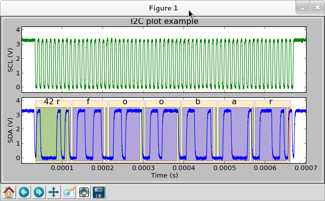

Ripyl plotting tutorial¶
This tutorial provides an overview of plotting with Ripyl.
The Ripyl library comes with a demo program that can plot examples of each supported protocol. It is possible to use the same plotting facilities to plot your own data if needed. The optional matplotlib library must be installed to plot waveforms with Ripyl.
Get sampled data¶
For this example we will generate some synthesized I2C waveforms to plot with. This step can be skipped if you already have sampled waveforms ready to plot.
import ripyl.sigproc as sigp
import ripyl.streaming as stream
import ripyl.protocol.i2c as i2c
def sim_i2c():
# I2C params
clock_freq = 100.0e3
# Sampled waveform params
sample_rate = clock_freq * 100.0
rise_time = sigp.min_rise_time(sample_rate) * 10.0 # 10x min. rise time
noise_snr = 30.0
message = 'foobar'
byte_msg = bytearray(message.encode('latin1')) # Get raw bytes as integers
transfers = [i2c.I2CTransfer(i2c.I2C.Read, 0x42, byte_msg)]
# Synthesize the waveform edge stream
scl, sda = i2c.i2c_synth(transfers, clock_freq, idle_start=3.0e-5, idle_end=3.0e-5)
# Convert to a sample stream with band-limited edges and noise
cln_scl_it = sigp.synth_wave(scl, sample_rate, rise_time, tau_factor=0.7)
cln_sda_it = sigp.synth_wave(sda, sample_rate, rise_time, tau_factor=1.5)
# Add noise and gain
noisy_scl_it = sigp.amplify(sigp.noisify(cln_scl_it, snr_db=noise_snr), gain=3.3, offset=0.0)
noisy_sda_it = sigp.amplify(sigp.noisify(cln_sda_it, snr_db=noise_snr), gain=3.3, offset=0.0)
# Capture the samples from the iterator
noisy_scl = list(noisy_scl_it)
noisy_sda = list(noisy_sda_it)
return (noisy_scl, noisy_sda)
The Ripyl Plotter object needs sample streams as the waveform source(s). If you are getting samples from an external source you must convert them to a sample stream with the samples_to_sample_stream() function.
# Get scl_samples and sda_samples from external source
noisy_scl = stream.samples_to_sample_stream(scl_samples, sample_period)
noisy_sda = stream.samples_to_sample_stream(sda_samples, sample_period)
Plot waveforms¶
Once the sample streams are prepared you are ready to plot. The StreamRecords produced by the protocol decoders contain annotation information useful for plotting. Ripyl provides a Plotter class that encapsulates a matplotlib figure and handles layout and annotation formatting. You prepare a plot with the plot() method, providing a dict of channel definitions with the waveform samples, any decoded records for annotation, and the title for the plot. Once the Plotter object is prepared you can either show the result in a matplotlib window or save it to a file.
import matplotlib
import ripyl.util.plot as rplot
from collections import OrderedDict
noisy_scl, noisy_sda = sim_i2c() # Generate simulated sample streams
# The decoded records contain annotation information
records = list(i2c.i2c_decode(iter(noisy_scl), iter(noisy_sda)))
# Define the channels ordered from top to bottom with the y-axis labels
channels = OrderedDict([('SCL (V)', noisy_scl), ('SDA (V)', noisy_sda)])
title = 'I2C plot example'
# The Plotter object formats the samples and annotations into plotted waveforms
plotter = rplot.Plotter()
plotter.plot(channels, records, title, label_format=stream.AnnotationFormat.Text)
plotter.show() # Show the plot in a matplotlib window
This produces an interactive plot window:
You can save the plot to a file instead:
# Write PNG image of 8x4 inches (800x400 @ 100dpi)
plotter.save_plot('i2c.png', (8.0, 4.0))
The plot() method has a label_format parameter that controls the default format for the annotation text labels. The available formats are defined in the AnnotationFormat enum:
- Hidden
- Invisible text label. Only the colored rectangle is drawn
- Invisible
- Invisible text label and rectangle
- String
- Record data attribute is treated as a string
- Text
- Record data attribute is a sequence of characters
- Int
- Label as integers (default)
- Hex
- Label as hexadecimal
- Bin
- Label as binary
- Small
- Same as String but with smaller text
The label_format parameter only affects fields that have been annotated to have a general purpose format. Changing the format to Hex produces the following result. Note that the address portion and the ack bits retain their formatting as String and Hidden.
plotter.plot(channels, records, title, label_format=stream.AnnotationFormat.Hex)


{kind=link}
{kind=link}